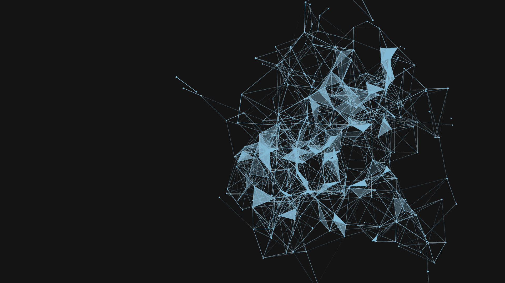

Used XGBoost and Logistic Regression to predict churn. Visualized SHAP values to explain model decisions.
View on GitHub
Trained a Random Forest classifier using TF-IDF features for spam detection. Achieved 95% precision.
View on GitHub
Built and evaluated CNN models for pseudo X-ray image interpretation using PyTorch.
View on GitHub
Predicted employee attrition using ML. Included correlation and feature importance analysis.
View on GitHub
Analyzed success metrics of marketing calls using Logistic Regression and Decision Trees.
View on GitHub
Built interactive Power BI dashboards with KPIs and drill-down analysis by region.
View on GitHub
Created a BI dashboard highlighting key operational metrics and agent performance.
View on GitHub
Visualized diversity indicators across departments. Helped drive equitable decisions.
View on GitHub
Explored and visualized census demographics. Created pairplots to observe feature relationships.
View on GitHub
As a passionate Software Developer and Data Scientist, I thrive on creating intelligent solutions that blend engineering and analytics. With 2+ years of experience in both frontend/backend development and a strong foundation in Python, Java, and machine learning, I bring a unique fusion of design thinking and scientific problem-solving to every project I work on.
I am especially enthusiastic about Natural Language Processing, AI ethics, and interactive dashboards that tell compelling data stories. Let’s collaborate on creating something impactful!
I use Python daily for EDA, data cleaning, model training, and automation. Libraries like pandas, NumPy, scikit-learn, and Streamlit are my go-to tools.
I write efficient queries using PostgreSQL and MySQL. I enjoy working with joins, subqueries, and window functions to uncover insights from relational data.
I’ve developed end-to-end applications using JAVA, MySql(Backend), HTML/CSS/JS (frontend), and integrated REST APIs. My projects often combine dashboards with real-time logic.
I containerize Python applications using Docker and manage reproducible environments for ML models and apps. I also use GitHub for version control and collaboration.
I’ve built classification, regression, and clustering models using scikit-learn, XGBoost, and LightGBM. I regularly fine-tune hyperparameters and evaluate performance using cross-validation.
I enjoy working on text data — from preprocessing to training Transformer-based models. I've developed sentiment classifiers, intent detectors, and a contextual chatbot.
I create intuitive visuals using Power BI, Matplotlib, and Plotly. I focus on helping stakeholders interpret findings clearly, not just showing numbers.
I'm always open to collaborating, mentoring, or answering questions related to data science, development, or career transitions. Drop me a message below or email me directly at hematechie@gmail.com.